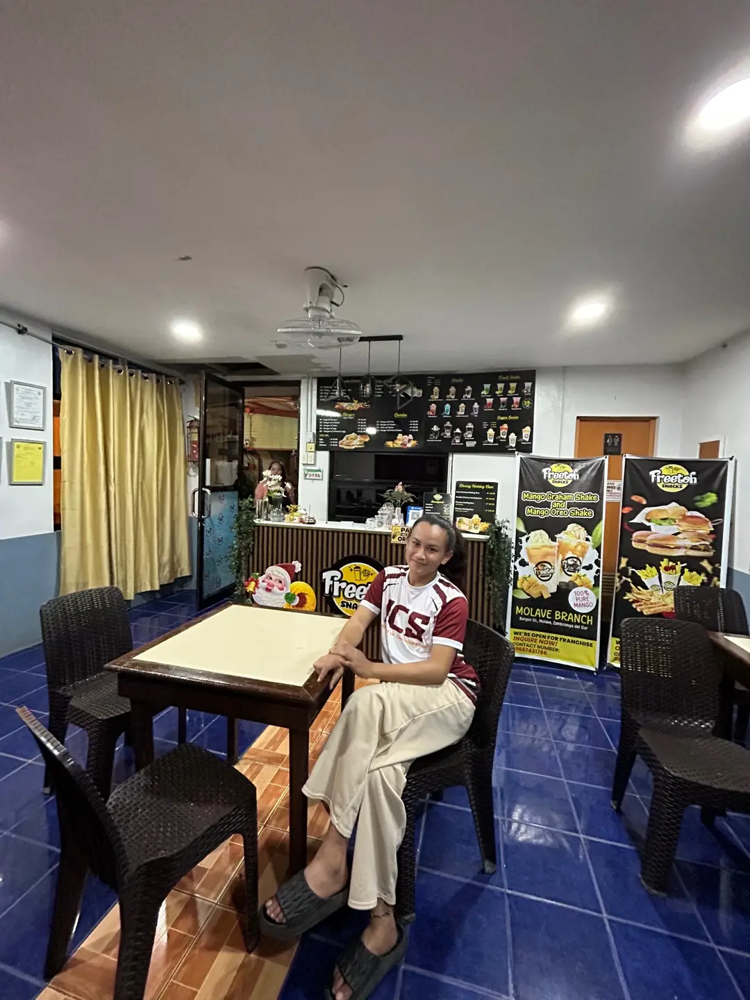

I started this journey not because it is easy, but because it is worth it. I am 27 years old, and I know that it is never too late to chase your dreams. I may be starting now, but I am starting with a heart full of purpose and a spirit that will not give up.
I want to become successful — not just to be rich, but to be rich in love, rich in kindness, and rich in blessings that I can share. I want to build a life where my beloved boy sees that hard work, faith, and goodness truly do prevail. I want to stand tall and say: "We made it — together."
I will not rush. I will not quit. I will trust God’s plan, do my best, and let Him do the rest. He who began a good work in me will carry it to completion. This is my journey. This is my light. And I will let it shine.
"I can do all things through Christ who strengthens me." — Philippians 4:13